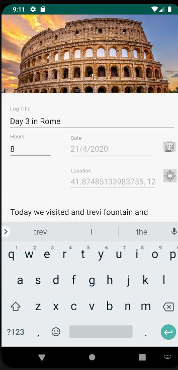
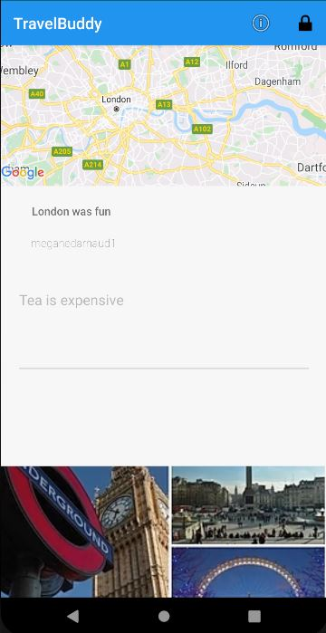

Challenges and Features
- Encrypted Database
- Interacts with the Google Maps API with its own API key
- Built in a two-day sprint as the final project for the class
- Incorporates many elements taught in the class such as recycler views for efficiency
Dating web app for computer science students built in JavaScript and using bootstrap
Having studied in the international baccalaureate programme in high school, we were encouraged to take part on the yearly trips abroad in an educational context. Often the highlight of the year for many students, the only thing dragging down the whole adventure was having to carry a notebook and writing supplies around all day to uncomfortably write down lengthy logs while walking instead of taking in these sights. I solved this problem by creating an application that supplies students and teachers with their own login for students to write their entries, pinpoint their geolocation and enter their comments. Teachers can then consult those logs grouped by the students in their class.
As a student I can securely login to my account to complete my daily log. I am able to choose a photo from my photo album from the day and append it to my entry. I can also add a description of my day for my teacher to read as well as add my geolocation to show the exact coordinates of the place I've visited today. I can create multiple reports for each day from within the application and all will be transmitted to the teacher in charge of me.
As a teacher I can securely login to my account to check that my students have written their mandatory travel log. I have a global view of all logs entered into the application by the students under me and I can click each one to expand the details and see what they have written down, what photo they took for day and the coordinates of the point of interest they visited.